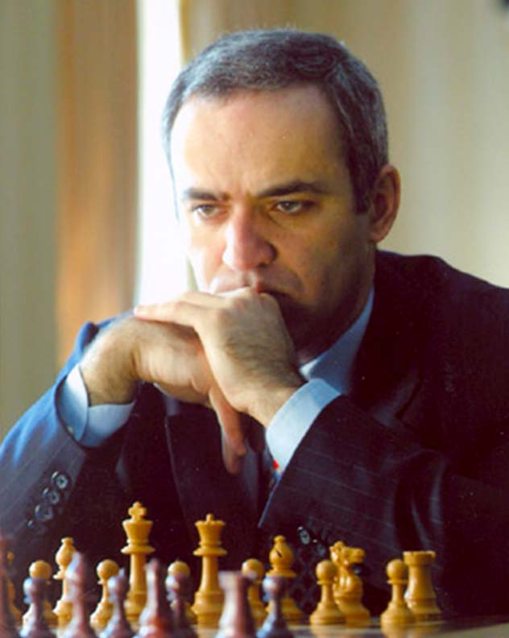

Important Chess Players
Bobby Fischer
Robert James Fischer known mostly as "Bobby Fischer" was a chess prodigy who at age 14 became the youngest US Chess Champion and at 15 became the youngest chess grandmaster ever up until that time. He won the World Chess Championship in 1972. To learn more about this player click here
Garry Kasparov
Garry Kimovich Kasparov is a Chess Grandmaster and former World Champion who was ranked number one in the world for a record 255 months overall until being surpassed by Magnus Carlsen in 2013. He became the youngest ever World Chess Champion in 1985 by defeating Anatoly Karpov. To learn more about this player click here
Magnus Carlsen
Sven Magnus Carlsen is the current Chess World Champion, World Rapid Chess Champion and World Blitz Chess Champion defeating Garry Kasparov as the best chess player of all time in 2010. He became Chess Grandmaster at the age of 13. Magnus became the World Chess Champion in 2013 after defeating Viswanathan Anand. To learn more about this player click here